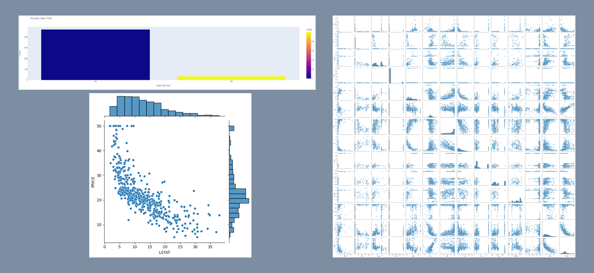

Housing Data Analysis

This Google Colaboratory notebook provides a comprehensive exploration of the Boston housing dataset, aiming to analyze the data, visualize key relationships, and build a linear regression model to predict housing prices. Initially, the dataset is loaded, and its structure, column names, and any missing or duplicated data are examined. Key statistics, such as the average number of students per teacher and the average home price, are calculated.
Visualizations are created to reveal insights: distribution plots for housing prices and distances to employment centers, a bar plot showing the count of houses near the Charles River, a pairplot for all feature relationships, and jointplots for specific feature pairs like distance vs. nitric oxide concentration. The data is then prepared for modeling by separating the target variable (price) from the features and splitting the dataset into training and testing sets. A linear regression model is built, fitted to the training data, and evaluated using the R-squared value to measure its explanatory power. This notebook offers a thorough walkthrough of exploratory data analysis, visualization, and basic linear regression modeling on the Boston housing dataset.